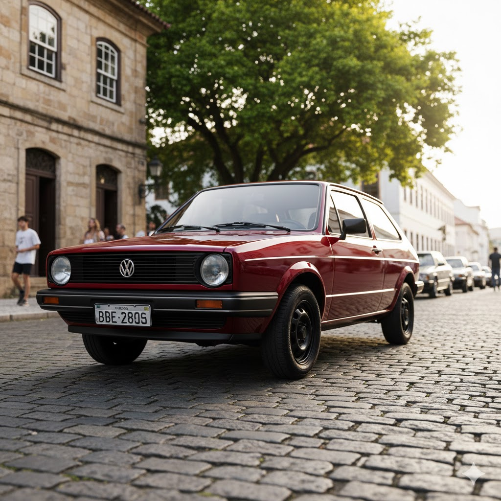
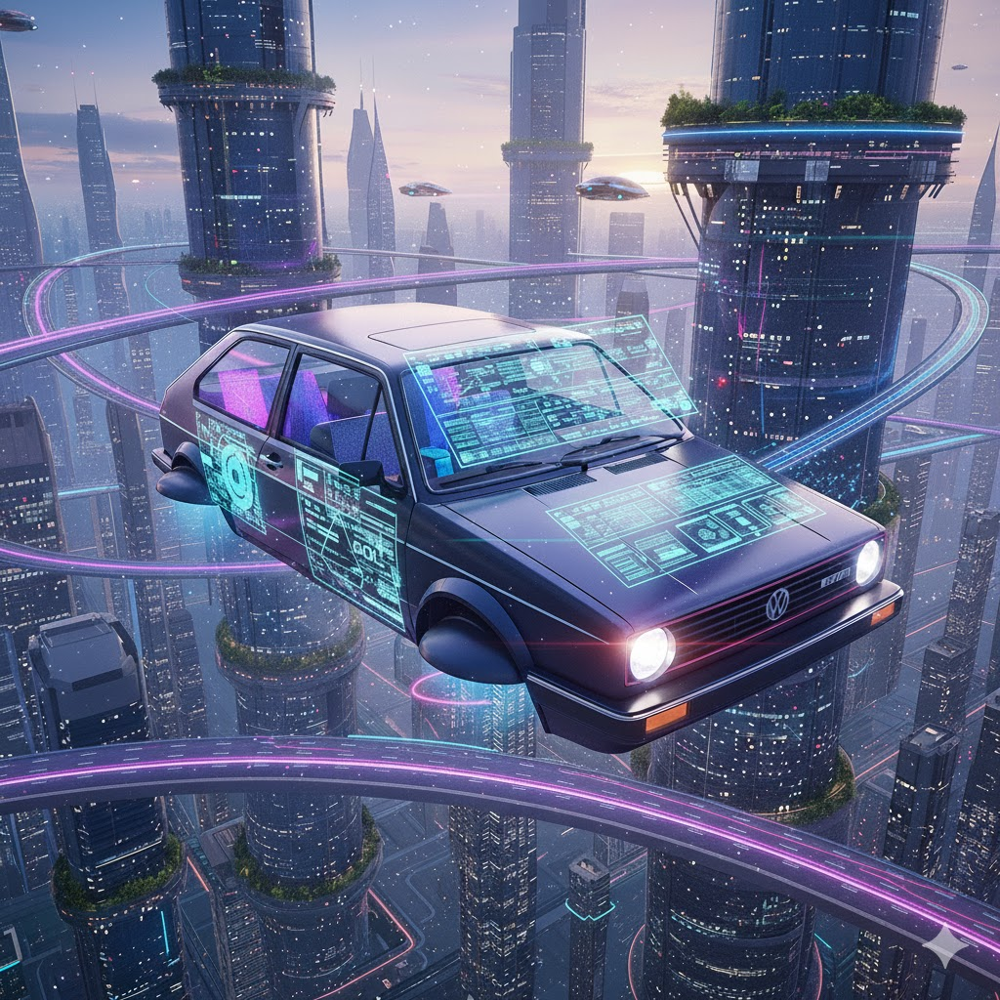

Gol – Do Passado ao Futuro: Um Ícone que Nunca Sai de Cena
Se existe um carro que atravessou gerações, evoluiu com o tempo e continua conquistando apaixonados,
esse carro é o Volkswagen Gol. Nas imagens promocionais — que contrastam um Gol clássico
com sua versão futurista — fica claro o que já sabemos há décadas: o Gol é um símbolo do automobilismo brasileiro,
capaz de se adaptar a qualquer época.
Este anúncio apresenta um Gol real e muito bem conservado, ao mesmo tempo em que celebra
sua história e imagina seu futuro. Um modelo que começou simples, robusto e acessível, e que
hoje é visto como um verdadeiro clássico nacional.
CONTRASTE PERFEITO: PASSADO X FUTURO

PASSADO

FUTURO
O Gol do Passado (o veículo real à venda)
A versão clássica, fotografada nas ruas históricas, representa tudo aquilo
que fez o Gol se tornar um dos carros mais vendidos do Brasil:
Design simples e marcante, com linhas retas e postura robusta.
Construção sólida, famosa por aguentar o uso diário sem perder desempenho.
Facilidade de manutenção, com peças acessíveis e mecânica descomplicada.
Durabilidade excepcional, que faz muitos exemplares chegarem fortes até hoje.
Presença vintage, trazendo charme e nostalgia.
O exemplar apresentado no anúncio está em excelente estado: pintura brilhante,
interior cuidado, motor funcionando redondo (conforme mostrado no vídeo) e um visual impecável.
GOL FUTURISTA
O Gol Futurista (representação conceitual)
Na versão futurista representada nas imagens, imaginamos como o Gol seria se fosse reinventado em uma sociedade avançada, com tecnologias de flutuação, hologramas e cidades suspensas:
Tecnologia embarcada de última geração, com painéis holográficos e sistemas inteligentes.
Mobilidade aérea, sem rodas, representando um salto tecnológico máximo.
Integração total com ambientes urbanos futuristas, destacando inovação e liberdade.
Estética retrô-modernizada, mantendo a essência do Gol clássico, mas com linguagem futurista.
Essa representação reforça uma ideia poderosa:
se o Gol existisse daqui a 100 anos, ainda seria um ícone.
UM CARRO QUE SUPERA O TEMPO
O grande destaque deste anúncio é mostrar como o Gol é mais que um carro — é uma obra cultural brasileira. Ele já fez parte do passado, está presente em nossas ruas e, mesmo imaginado no futuro mais tecnológico possível, continua sendo reconhecido e valorizado.
Ao comparar o modelo real com sua versão futurista, mostramos o quanto ele é:
Atemporal
Confiável
Versátil
Querido por todas as gerações
É o tipo de veículo que desperta lembranças e, ao mesmo tempo, inspira possibilidades.
POR QUE ESTE GOL É UM EXCELENTE NEGÓCIO?
✔ Mecânica confiável
✔ Consumo eficiente
✔ Preço acessível
✔ Peças baratas e abundantes
✔ Estilo clássico valorizado no mercado
✔ Perfeito para quem quer um carro forte e de baixa manutenção
✔ Ótimo para colecionadores e entusiastas
CONCLUSÃO
Este Gol é a prova viva de como um carro pode marcar o passado, se destacar no presente e até ser imaginado no futuro com a mesma grandeza. Se você procura um veículo que une história, estilo, resistência e personalidade, encontrou o modelo ideal.
Venha dirigir um clássico que nunca sai de moda.